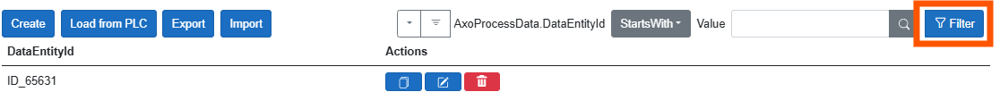
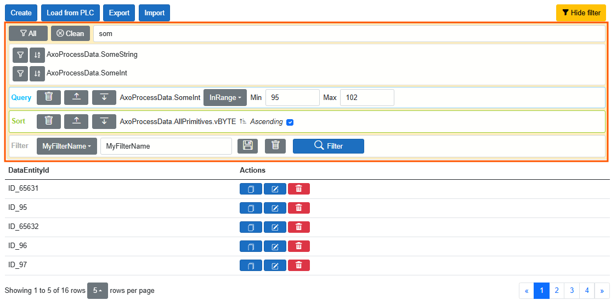
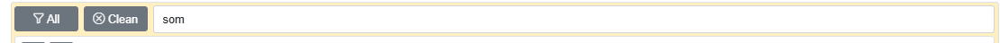
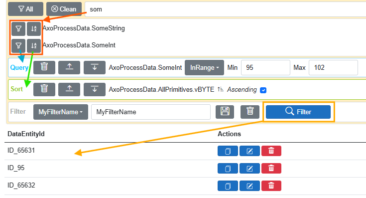

🔍 FILTER
Enables dynamic data filtering. Filter and sort operations can be configured dynamically based on members of the PLAIN data object.
To use filtering, the user must have the permission: can_data_filter_advanced.
All user roles from AxOpen.Data.

📋 Filter Content

🔎 Selecting Filter/Sort Members

- The "All" button adds all displayed members to the filter.
- The "Clean" button clears the search input, which causes the filtered members to be hidden.
- The input field will find members whose names contain the entered pattern.
Important
Filtering depends on PLAIN members.
If you are using a mapping layer (e.g., with a MongoDB driver), avoid filtering based on remapped or ignored members, as this may cause exceptions.
🛠️ Procedure

Important
The filtering mechanism applies an AND condition across all defined items in the query area.
For better performance, prioritize filtering on members that are indexed in the database.
🔧 Modifying List of Filtered Symbols
PlainSymbolBuilder
AXOpen.Data.Query.PlainSymbolBuilder is a tool that scans a PLAIN object and generates a flat list of string-based symbol paths representing its properties. It is used when working with flattened filtering and querying.
✨ Features
- Recursively explores a PLAIN object.
- Returns full symbol paths as strings (e.g.,
Root.PropertyA,Root.Nested.PropertyB). - Supports excluding properties:
- From specific interfaces
- From specific types (including nested classes)
- From the root type only
- Properties marked with
[PlainSymbolIgnoreAttribute]
Important
Exclusions are defined by a static list and affect your entire assembly or project.
For non-static exclusions, use the attribute on the desired property!
🛠️ How to Configure
Apply the [PlainSymbolIgnoreAttribute] attribute to properties to exclude them from the symbol list:
[AXOpen.Data.Query.PlainSymbolIgnoreAttribute]
public string Hidden { get; set; }
"Exclude properties directly on all roots :
AXOpen.Data.Query.PlainSymbolBuilder.IgnoreRootProperty("MyPropertyName");
Exclude properties defined on a specific type or its derived types:
AXOpen.Data.Query.PlainSymbolBuilder.IgnoreProperty(typeof(MyEntityBase), "InternalCode");
Exclude properties defined by an interface. All implementing classes will respect this exclusion:
AXOpen.Data.Query.PlainSymbolBuilder.IgnoreProperty(typeof(IPlain), "vBOOL");
Note
"Hash", "Changes", and "RecordId" are ignored by default!